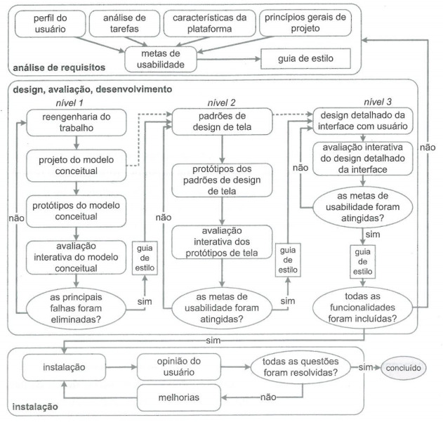

Entrega final
1. Introdução
Durante o primeiro semestre do ano de 2023, o Grupo 5 se responsabilizou com a matéria de Interação Humano Computador ministrada na Universidade de Brasília (UnB - FGA), e seu plano de ensino que previa uma avaliação buscando compreender os aspectos envolvidos em uma interação humano-computador. Desta forma, nos dedicamos em estudar e documentar tais aspectos envolvidos no site do Alistamento Online.
Este artefato possui o objetivo de condensar as informações referentes aos nossos processos e tarefas desenvolvidos ao longo do projeto, abrangendo desde a parte de planejamento do projeto até os resultados obtidos.
2. Site escolhido
Durante o processo de avaliação dos sites, os membros do grupo fizeram diversas buscas por plataformas que poderiam ser melhoradas e que tivessem funcionalidades importantes, nas quais poderiam ser reformuladas e entregues de uma maneira mais eficiente para o usuário. Com base nisso, foram analisados 5 sites, que se encontram na aba dos sites avaliados.
Após uma reunião com a equipe, foi decidido que o site do Alistamento Militar seria o objeto de estudo, pelas seguintes motivações:
- Site ainda não foi trabalhado na disciplina de IHC;
- O site apresenta problemas de interface;
- O site possui diversas funcionalidades que permitem uma análise aprofundada por parte dos membros do grupo;
- O site possui área de cadastro e login;
- O site é utilizado por diversas pessoas de forma constante, principalmente no período de alistamento - geralmente jovens entre 17 e 19 anos, o que inclui os calouros dos cursos de engenharia da FGA. Deste modo, teríamos um público alvo para a realização de testes e avaliações;
- O site possui problemas que geram confusão nos usuários e infrigem os princípios de usabilidade de Nielsen;
Durante a fase de Análise de Requisitos do Ciclo de Vida de Mayhew (será explicado no próximo tópico), pudemos explorar com mais detalhes o site e suas funcionalidades, bem como os problemas de usabilidade que o mesmo apresenta. Assim, a partir dos dados levantados, optamos por trabalhar as heurísticas do site que foram violadas durante a avaliação do site na primeira etapa do projeto, tais como:
- a
3. Ciclo de vida
O grupo decidiu utilizar a engenharia de usabilidade de Mayhew para o desenvolvimento do projeto, já que é um processo bem detalhado, organizado, completo, ideal para iniciantes e com baixa flexibilidade, ou seja, não teríamos o risco de nos perder durante o processo de design. Além disso focamos nas duas primeiras fases do processo, visto que a terceira fase (Instalação) foge do escopo da disciplina de Interação Humano-Computador.
A Figura 1 mostra um diagrama do ciclo de vida.

Figura 1: Diagrama da engenharia de usabilidade de Mayhew. (Fonte: BARBOSA e SILVA; 2011).
-
Análise de Requisitos: Com base principalmente no perfil do usuário e na análise de tarefas, nesta fase serão definidas as metas de usabilidades, que são fatores de qualidade que devem ser priorizados no projeto. O guia de estilo define as principais decisões de design a serem tomadas para que as metas de usabilidade possam ser atingidas, além disso o guia de estilo facilita na verificação das metas de usabilidade em outras fases do processo.
-
Design, Avaliação e Desenvolvimento: Nessa fase é construida uma solução de IHC que atenda às metas de usabilidade. Projetamos essa solução do menor nível de detalhe (modelo conceitual), até um nível de maior detalhe (protótipo de alta fidelidade). Em cada nível de detalhe temos uma rotina de projetar, desenvolver, e avaliar um modelo ou protótipo, só avançamos de nível quando o projeto for bem avaliado e seguir o guia de estilo.
4. Planejamento dos recursos e das entregas
Durante a primeira iteração do projeto, foi definido e prescrito no cronograma do planejamento os artefatos e/ou atividades que cada integrante estaria incumbido de produzir, em sua respectivas datas de produção e revisão. No entanto, devido a diversos fatores, como grande quantidade de matérias e trabalhos para todos, bem como a ausência de alguns participantes em vários momentos, ocasionou-se um atraso na entrega da grande maioria dos artefatos.
No sentido de realizar a comparação entre o que foi planejado e o que foi executado, elaboramos a Tabela 1 abaixo:
| Atividade | Data planejada | Data da execução | Autor planejado | Autor da execução | Revisor planejado | Revisor da execução |
|---|---|---|---|---|---|---|
| Escolha do site: motivação e objetivo do site | 13/04 à 20/04 | 13/04 à 14/04 | Arthur, Bruno, Danilo, Gabriel, João | Arthur, Bruno, Danilo, Gabriel, João | Arthur, Bruno, Danilo, Gabriel, João | Arthur, Bruno, Danilo, Gabriel, João |
| Listar ferramentas utilizadas: apresentação das ferramentas e utilização de cada uma delas | 13/04 à 22/04 | 22/04 à 23/04 | Bruno Martins e Gabriel Souza | Bruno Martins | Arthur Augusto | João Barreto |
| Criação da estrutura da GitHub Page: Template de abas e tema | 13/04 à 22/04 | 22/04 à 23/04 | Danilo Carvalho e João Barreto | Bruno Martins e João Barreto | Arthur, Bruno, Danilo, Gabriel, João | João Barreto |
| Criação do Cronograma completo: datas, autores, revisores e divisão de tarefas | 13/04 à 21/04 | 22/04 à 23/04 | Arthur de Melo | Arthur de Melo | Danilo Carvalho | Bruno Martins |
| Processos de Design: Conceito e ciclo de vida escolhido | 13/04 à 23/04 | 23/04 à 24/04 | Danilo e Arthur Augusto | Danilo e Arthur Augusto | João Barreto | Bruno Martins e João Barreto |
| Implementar Cronograma na GitPage | 13/04 à 22/04 | 22/04 | Bruno Martins | Bruno Martins | João Barreto | João Barreto |
| Realização do Planejamento: avaliação dos sites, contendo introdução e metodologia utilizada | 13/04 à 23/04 | 23/04 | Arthur, Bruno, Danilo, Gabriel, João | Bruno Martins e João Barreto | Bruno Martins João Barreto | Bruno Martins e João Barreto |
| Apresentação: gravação, upload do vídeo, envio do link do vídeo no Aprender3 | 23/04 à 24/04 | 24/04 | João Barreto | Danilo Carvalho | Danilo Carvalho | Gabriel Souza |
| Aspectos éticos de pesquisa: Introdução e apresentação dos princípios éticos | 26/04 à 04/05 | 04/05 | João Barreto e Gabriel Souza | João Barreto e Gabriel Souza | Arthur Augusto | Arthur Augusto |
| Perfil do Usuário: Elaboração do questionário, coleta e análise dos dados | 26/04 à 05/05 | 04/05 à 05/05 | Arthur Augusto e Danilo Carvalho | Arthur Augusto e Danilo Carvalho | Gabriel | Gabriel |
| Personas: Motivação e criação das personas a partir do perfil do usuário | 26/04 à 06/05 | 06/05 | Gabriel Souza | Gabriel Souza | Bruno Martins | Bruno Martins |
| Análise de tarefas do usuário: Realizar os caminhos que o usuário faria no site | 26/04 à 07/05 | 07/05 | Bruno Martins e Danilo Carvalho | Bruno Martins e Danilo Carvalho | João Barreto | João Barreto |
| Apresentação: gravação, upload do vídeo, envio do link do vídeo no Aprender3 | 07/05 | 07/05 | João Barreto | João Barreto | Danilo Carvalho | Danilo Carvalho |
| Princípios gerais de projeto: listagem dos princípios e descrição de cada um | 10/05 à 12/05 | 11/05 à 13/05 | João Barreto e Danilo Carvalho | Danilo Carvalho | Bruno Martins | Bruno Martins |
| Metas de usabilidade: definição de metas e identificação de requisitos levantados a partir delas | 10/05 à 13/05 | 14/05 | Arthur Augusto e Gabriel Souza | Arthur Augusto e Gabriel Souza | João Barreto | João Barreto |
| Guia de estilo: definição do objetivo, apresentação do conteúdo do guia | 10/05 à 14/05 | 15/05 | Bruno Martins | Bruno Martins | Arthur Augusto | Arthur Augusto e Gabriel Souza |
| Características da plataforma: listagem e explicação de cada característica | 10/05 à 14/05 | 13/05 à 14/05 | João Barreto | João Barreto | Gabriel Souza | Gabriel Souza |
| Apresentação: gravação, upload do vídeo, envio do link do vídeo no Aprender3 | 14/05 à 15/05 | 15/05 | Arthur Augusto, Bruno, Danilo, Gabriel, João | Arthur Augusto, Bruno, Danilo, Gabriel, João | Arthur Augusto, Bruno, Danilo, Gabriel, João | Arthur Augusto, Bruno, Danilo, Gabriel, João |
| Planejamento da avaliação do storyboard: Metodologia utilizada, papel dos avaliadores, criação das perguntas e desenvolvimento dos storyboards | 17/05 à 20/05 | 21/05 | Bruno Martins e Gabriel Souza | Bruno Martins e Gabriel Souza | Bruno Martins e Gabriel Souza | Bruno Martins e Gabriel Souza |
| Desenvolvimento dos storyboards | 21/05 | 21/05 | Gabriel Souza | Gabriel Souza | Bruno Martins | Bruno Martins |
| Planejamento do relato dos resultados: listagem de elementos do relato, metodologia, problemas e sugestões | 17/05 à 20/05 | 19/05 à 20/05 | Danilo Carvalho e João Barreto | Danilo Carvalho e João Barreto | Arthur Augusto | Arthur Augusto |
| Planejamento da avaliação de análise de tarefas: Definir a metodologia a ser utilizada para executar o planejamento da análise de tarefas e do teste piloto | 17/05 à 21/05 | 19/05 à 20/05 | João Barreto | João Barreto | Danilo Carvalho | Danilo Carvalho |
| Planejamento do relato dos resultados da avaliação da análise de tarefas: apresentação da metodologia, definição do objetivo, análise dos dados e sugestões | 17/05 à 20/05 | 20/05 | Danilo Carvalho e Arthur Augusto | Danilo Carvalho e Arthur Augusto | João Barreto | João Barreto |
| Apresentação: gravação, upload do vídeo, envio do link do vídeo no Aprender3 | 21/05 à 22/05 | 22/05 | Bruno Martins | Bruno Martins | Gabriel Souza | Gabriel Souza |
| Relato dos resultados do storyboard: apresentação da metodologia, objetivos da avaliação dos storyboards e gravação do teste piloto | 24/05 à 28/05 | 27/05 à 28/05 | Arthur Augusto e Gabriel Souza | Arthur Augusto e Gabriel Souza | Bruno Martins | Bruno Martins |
| Relato dos resultados da análise de tarefas: apresentação da metodologia e dos dados coletados. Gravação da entrevista | 24/05 à 29/05 | 29/05 | João Barreto e Danilo Carvalho | João Barreto e Danilo Carvalho | Arthur Augusto | Arthur Augusto |
| Planejamento da avaliação na prototipação de papel: descrição dos objetivos, metodologias e ferramentas. Listagem dos elementos do protótipo, termo de consentimento e entrevista | 24/05 à 29/05 | 28/05 à 29/05 | Bruno Martins e Gabriel Souza | Danilo Carvalho | Danilo Carvalho | |
| Planejamento do relato de resultados da avaliação na prototipação de papel: Descrição dos elementos do relato, objetivo, metodologia, sugestões | 24/05 à 28/05 | 28/05 | Bruno Martins e Arthur Augusto | Bruno Martins | João Barreto | Danilo Carvalho |
| Apresentação: gravação, upload do vídeo, envio do link do vídeo no Aprender3 | 29/05 | 29/05 | Bruno Martins | Danilo Carvalho | Gabriel Souza | Gabriel Souza |
| Planejamento e execução da avaliação dos artefatos da Etapa 01 do grupo 06: Home page, cronograma, cronograma executado, metolodia, ferramentas e processo de Design. | 31/06 à 05/06 | 05/06 | Bruno Martins | Bruno Martins | João Barreto | João Barreto |
| Planejamento e execução da avaliação dos artefatos da Etapa 02 do grupo 06: Perfil do usuário, aspectos éticos de pesquisas envolvendo pessoas, personas e análise de tarefas. | 31/05 à 04/06 | 03/06 à 04/06 | Gabriel Marques | Gabriel Marques | Arthur Augusto | João Barreto |
| Planejamento e execução da avaliação dos artefatos da Etapa 03 do grupo 06: Princípios gerais de projeto, metas de usabilidade, guia de estilo. | 31/05 à 05/06 | 05/06 | João Barreto | João Barreto | Bruno Martins | Bruno Martins |
| Planejamento e execução da avaliação dos artefatos da Etapa 04 do grupo 06: Planejamento da avaliação do storyboard e análise de tarefas, planejamento do relato dos resultados da avaliação do storyboard e o planejamento do relato dos resultados da avaliação do análise de tarefas. | 31/05 à 05/06 | 05/06 | Arthur Augusto | Arthur Augusto | Gabriel Marques | Gabriel Marques e João Barreto |
| Planejamento e execução da avaliação dos artefatos da Etapa 05 do grupo 06: Relato dos resultados do storyboard e da análise de tarefas, planejamento da avaliação do protótipo de papel e do planejamento do relato dos resultados da avaliação do protótipo de papel. | 31/05 à 04/06 | 04/06 | Danilo Carvalho | Danilo Carvalho | Bruno Martins | João Barreto |
| Apresentação: gravação, upload do vídeo, envio do link do vídeo no Aprender3 | 04/06 à 05/06 | 05/06 | Bruno Martins | Bruno Martins | Gabriel Souza | Gabriel Souza |
| Planejamento e execução da avaliação dos artefatos da Etapa 01: Home page, cronograma, cronograma executado, metolodia, ferramentas e processo de Design. | 14/06 à 19/06 | 19/06 | Bruno Martins | Bruno Martins | João Barreto | Arthur Augusto |
| Planejamento e execução da avaliação dos artefatos da Etapa 02: Perfil do usuário, aspectos éticos de pesquisas envolvendo pessoas, personas e análise de tarefas. | 14/06 à 19/06 | 18/06 à 19/06 | Gabriel Marques | Gabriel Marques | Arthur Augusto | João Barreto |
| Planejamento e execução da avaliação dos artefatos da Etapa 03: Princípios gerais de projeto, metas de usabilidade, guia de estilo. | 14/06 à 19/06 | 18/06 | João Barreto | João Barreto | Bruno Martins | Bruno Martins |
| Planejamento e execução da avaliação dos artefatos da Etapa 04: Planejamento da avaliação do storyboard e análise de tarefas, planejamento do relato dos resultados da avaliação do storyboard e o planejamento do relato dos resultados da avaliação do análise de tarefas. | 14/06 à 19/06 | 19/06 | Arthur Augusto | Arthur Augusto | Gabriel Marques | Gabriel Marques |
| Planejamento e execução da avaliação dos artefatos da Etapa 05: Relato dos resultados do storyboard e da análise de tarefas, planejamento da avaliação do protótipo de papel e do planejamento do relato dos resultados da avaliação do protótipo de papel. | 14/06 à 19/06 | 19/06 | Danilo Carvalho | Danilo Carvalho | Bruno Martins | João Barreto |
| Apresentação: gravação, upload do vídeo, envio do link do vídeo no Aprender3 | 19/06 | 19/06 | Bruno Martins | Bruno Martins | Gabriel Souza | Gabriel Souza |
| Relato dos resultados da prototipação de papel: descrição do objetivo, metodologias e participante, incluindo avaliadores. Explicação do protótipo de papel com imagens | 07/06 à 12/06 | 12/06 | João Barreto e Gabriel Souza | João Barreto e Gabriel Souza | Bruno Martins | Bruno Martins |
| Planejamento da avaliação do protótipo de alta fidelidade: descrição dos objetivos, metodologia, criação do cronograma de avaliação, recrutamento de participantes, planejamento do teste piloto e papel dos avaliadores | 07/06 à 12/06 | 12/06 | Arthur Augusto e Bruno Martins | Bruno Martins | Gabriel Souza | Gabriel Souza |
| Planejamento do relato dos resultados da avaliação do protótipo de alta fidelidade: Apresentação do teste piloto, definição de metodologia, participantes e avaliadores. Apresentação do protótipo de alta fidelidade | 09/06 à 12/06 | 12/06 | Danilo Carvalho | João Barreto | Arthur Augusto | |
| Apresentação: gravação, upload do vídeo, envio do link do vídeo no Aprender3 | 12/06 | 12/06 | Bruno Martins | Bruno Martins | Gabriel Souza | Gabriel Souza |
| Elaboração do protótipo de alta fidelidade | 21/06 à 26/06 | 26/06 | Arthur Augusto, Danilo Carvalho, Gabriel Marques | Arthur Augusto, Danilo Carvalho, Gabriel Marques | João Barreto | João Barreto |
| Realização do teste piloto da avaliação do protótipo de alta fidelidade | 21/06 à 26/06 | 26/06 | Danilo Carvalho | Danilo Carvalho | Gabriel Souza | Gabriel Souza |
| Registro dos resultados na gitpages | 21/06 à 26/06 | 26/06 | Gabriel Marques | Gabriel Marques | Danilo Carvalho | Danilo Carvalho |
| Refatoração parcial dos artefatos das etapas 1 e 2 | 21/06 à 26/06 | 26/06 | Bruno Martins e João Barreto | Bruno Martins e João Barreto | Bruno Martins e João Barreto | Bruno Martins e João Barreto |
| Apresentação: gravação, upload do vídeo, envio do link do vídeo no Aprender3 | 26/06 | 26/06 | Arthur Augusto, Danilo Carvalho, Gabriel Marques, João Barreto | Arthur Augusto, Danilo Carvalho, Gabriel Marques, João Barreto | Bruno Martins | Bruno Martins |
| Verificação dos artefatos das Entregas 07 e 08: correção de bugs e melhorias | 27/06 à 03/07 | 03/07 | Bruno e Gabriel | Bruno | João | João |
| Apresentação: gravação, upload do vídeo, envio do link do vídeo no Aprender3 | 03/07 à 05/07 | 05/07 | Arthur Augusto, Bruno, Danilo, Gabriel, João | Arthur Augusto, Bruno, Danilo, João | Arthur Augusto e Danilo | Arthur Augusto e Danilo |
Tabela 10: Organização da Entrega Final (Fonte: MARTINS, Bruno; BARRETO, João; 2023).
Tabela 1: Comparação entre os cronogramas executado e planejado. (Fonte: BARRETO, João; 2023).
5. Execução do projeto
O Ciclo de Vida de Mayhew [1] oferece uma abordagem estruturada para o desenvolvimento de sistemas interativos, desde a análise inicial das necessidades dos usuários até a avaliação final da usabilidade do sistema. Dessa forma, as etapas do projeto foram executadas a partir desse ciclo, sendo elas listadas na tabela abaixo, juntamente com os artefatos correspondentes a cada uma:
| Fases | Definição | Artefatos |
|---|---|---|
| Análise de Requisitos | Na análise de requisitos são estruturados os artefatos que serão utilizados durante toto o projeto, sendo eles as metas de usabilidade, definidas a partir do perfil dos usuários, a análise de tarefas, as características da plataforma, os princípios de design de IHC, além do Guia de Estilo | Metas de Usabilidade, Perfil dos Usuários, Análise de Tarefas, Características da Plataforma, Princípios Gerais do Projeto e Guia de Estilo |
| Design, Avaliação e Desenvolvimento | Nesta etapa são construídos artefatos com o intuito de criar uma interface final que atenda às metas de usabilidade definidas | |
| Nível 1 | O primeiro nível está relacionado a uma parte mais conceitual, pensando mais nas tarefas que seriam executadas no processo. A partir disso, são realizados esboços, rascunhos e diagramas com o intuito de propor uma interface ao usuário | Planejamento da Avaliação da análise de tarefas, Planejamento do relato dos resultados da análise de tarefas, Relato dos resultados da análise de tarefas, Planejamento da Avaliação do storyboard, Planejamento do relato dos resultados do storyboard, Relato dos resultados do storbyboard |
| Nível 2 | O segundo nível consiste na criação de um protótipo de baixa fidelidade, uma vez que as ideias iniciais foram propostas no nível 1 | Planejamento da Avaliação do protótipo de papel, Planejamento do relato dos resultados do protótipo de papel, Relato dos resultados do protótipo de papel, Protótipo de papel |
| Nível 3 | Nesta etapa é construído o projeto completo da interface em alta fidelidade, considerando aspectos visuais, como cores, fontes, ícones e layout. O protótipo de alta fidelidade tem todas as funcionalidades e características de uma plataforma real, sendo utilizado como a base da implementação | Planejamento da Avaliação do protótipo de alta fidelidade, Planejamento do relato dos resultados do protótipo de alta fidelidade, Relato dos resultados do protótipo de alta fidelidade, Protótipo de alta fidelidade |
Tabela 1.5: Execução do Projeto de cada etapa do Ciclo de vida de Mayhew (Fonte: BARRETO, João; 2023).
6. Resultados alcançados
Esta seção apresenta os resultados alcançados durante o trabalho realizado na disciplina de Interação Humano-Computador e lista os pontos positivos e negativos identificados pelo Grupo 05, responsável pelo repositório de análise do site de Alistamento Militar Online. O documento tem como objetivo apresentar uma dissertação a respeito dos resultados do grupo ao longo do projeto e se o objetivo inicial do grupo foi atingido, além de identificar as razões do sucesso ou insucesso de tal projeto.
6.1 Objetivo do projeto
Esse trabalho teve como objetivo principal contribuir de forma prática na aquisição de conhecimento dos integrantes do Grupo 05, com a realização de atividades práticas, para isso foi escolhido um Sistema web, a nossa gitpage, no qual o grupo pode exercer os conhecimentos adquiridos ao longo do semestre na disciplina de Interação Humano-Computador de forma prática.
6.2 Resultados
Ao decorrer do projeto os membros puderam praticar seus conhecimentos através da elaboração de artefatos de Planejamento, Análise de Requisitos, Design, Avaliação e Desenvolvimento e Verificação, assim passando por algumas etapas nas quais foi necessário o contato com usuários reais. Dessa forma, foi possível que todos os membros do grupo aprendessem o conteúdo unindo teoria e prática, assim facilitando o entendimento do conteúdo e realizando todas as atividades propostas para o grupo durante a disciplina.
O artefato de Planejamento foi essencial, ainda que inicialmente incompleto e inconsistente com a realidade devido à falta de experiência do grupo com elaboração de projetos relacionados à Interação Humano-Computador. A fase de Análise de Requisitos permitiu que o grupo tivesse um contato inicial com usuários reais da plataforma de modo que foi possível entender melhor suas necessidades com relação ao software produzido e ajudou o grupo a por em prática os conhecimentos adquiridos ao longo do semestre, de forma análoga na etapa de Design, Avaliação e Desenvolvimento o grupo adquirir conhecimentos práticos e teóricos, por meio do contato com usuários, desenvolvimentos de protótipos de baixa e alta fidelidade. Já na fase de verificação o grupo pode identificar o que precisaria ser melhorado, assim como durante as apresentações de ponto de controle.
Sobre esse prisma, a conclusão desse trabalho permitiu que o grupo aprendesse o contúdo da matéria, entendesse melhor o ciclo de vida de um software, principalmente com relação ao Design, conforme o detalhamento do Ciclo de vida da Mayhew.
Para a conclusão dos resultados pode-se assumir que o projeto desenvolvido foi um sucesso pois atendeu a todos os requistos e padrões definidas nas metas de usabilidade, além disso a avaliação realizada do site de Alistamento Militar Online teve os seus pontos negativos supridos pelo que foi desenvolvido no protótipo de alta fidelidade, há apenas uma observação a ser feita que seria quanto há avaliação do site, nela é definida que um dos problemas do site é que os botões são dos mesmos tamanhos e possuem as mesmas cores, porém mesmo o protótipo de alta fidelidade ter seguido esses padrões não forma vistos como erros por nenhum dos usários que realizaram as entrevistas, após as correções realizadas do protótipo a unica observação feita pelo usário é que o projeto estava "claro, objetivo e muito bem estruturado".
6.3 Facilidades
As facilidades do grupo ao longo do projeto foram:
Facilidade de pesquisa devido à grande quantidade de materiais pertinentes disponibilizados pelo professor. Conhecimento adquirido ao longo do Curso de Engenharia de Software, com relação a ferramentas como o GitHub. Trabalho colaborativo entre os membros do grupo que foi essencial para a conclusão do projeto da disciplina.
6.4 Dificuldades
As dificuldades do grupo ao longo do projeto foram:
Dificuldade de encontrar usuários que usam ou usaram o site recentemente dispostos a participar de atividades para melhoria do projeto. O que mais dificultou foi o curto espaço de tempo entre entregas, dificultando a entregas de pontos de controles, apesar do planejamento, devido à grande quantidade de atividades que os membros possuíam com relação à universidade e/ou trabalho. A quantidade de integrantes do grupo também foi um fator que causou muitas complições, visto que o nosso grupo teve apenas 5 integrantes enquanto os demais tiverem de 6 até 8 integrantes, além disso alguns dos participantes tiveram problemas pessoais e necessidades especiais o que dificultou o desenvolvimento homogêneo do projeto para todos os integrantes.
7. Ferramentas utilizadas
As ferramentas utilizadas durante a execução do projeto estão listadas na Tabela 2 abaixo:
| Logo | Ferramenta | Descrição | Utilização | Etapa |
|---|---|---|---|---|
| <<<<<<< HEAD | ||||
 |
Figma | Figma é uma ferramenta de design colaborativa baseada na nuvem. Ela permite que designers e equipes trabalhem juntos em projetos de design de forma eficiente e eficaz. Com o Figma, é possível criar interfaces de usuário, protótipos interativos e colaborar em tempo real. | Utilizado para produzir os protótipos de alta fidelidade no nível 3 desenvolvimento. | Etapa 8 |
 |
Firefox | O Firefox é um navegador de internet gratuito e de código aberto desenvolvido pela Mozilla. Ele oferece uma experiência de navegação rápida, segura e personalizável. | Utilizado para acessar sites e as diversas ferramentas disponíveis na web. | Etapas 1 - 8 |
 |
Github | O GitHub é uma plataforma de desenvolvimento colaborativo baseada em nuvem que permite que os desenvolvedores armazenem, gerenciem e colaborem em projetos de software. Ele usa o sistema de controle de versão Git, que permite rastrear alterações em arquivos ao longo do tempo. | Armazenar os artefatos produzidos no repositório da disciplina, criar issues, commits, registrar as atividades e gerenciar o projeto. | Etapas 1 - 8 |
 |
Google Chrome | O Google Chrome é um navegador de internet rápido, seguro e fácil de usar desenvolvido pelo Google. Ele oferece uma experiência de navegação eficiente, permitindo que os usuários acessem rapidamente sites, pesquisem informações e executem aplicativos da web. | Utilizado para acessar sites e as diversas ferramentas disponíveis na web. | Etapas 1 - 8 |
 |
Google Docs | O Google Docs é uma ferramenta de processamento de texto baseada na nuvem desenvolvida pelo Google. Ele permite que os usuários criem, editem e compartilhem documentos de texto de forma colaborativa e em tempo real. Com o Google Docs, é possível criar documentos como relatórios, artigos, currículos, etc. | Empregado para escrever os PDFs que continham o endereço do repositório e o link do vídeo da respectiva entrega. | Etapas 1 - 8 |
 |
Google Forms | O Google Forms é uma ferramenta de criação de formulários online gratuita fornecida pelo Google. Ela permite que os usuários criem questionários, pesquisas e enquetes de maneira rápida e fácil. | Empregado para criar os questionários, para coletar dados pessoas que já tinham acessado a plataforma alguma vez, para assim criar o perfil de usuário e as personas. | Etapa 2 |
 |
Microsoft Excel | O Microsoft Excel é um programa de planilha eletrônica desenvolvido pela Microsoft. Ele oferece uma ampla gama de recursos para criar, organizar e analisar dados de maneira eficiente. | Criar a planilha do cronograma inicial. | Etapa 1 |
 |
Microsoft Teams | O Microsoft Teams é uma plataforma de comunicação e colaboração baseada na nuvem desenvolvida pela Microsoft. Ela permite que equipes e grupos de trabalho se comuniquem, compartilhem arquivos e colaborem em projetos de forma eficiente. | Realizar as reuniões semanais, gravar os vídeos das apresentações e entrevistas com os usuários durante a etapa de avaliação de storyboards, protótipos de papel, etc. | Etapas 1 - 8 |
 |
Miro | Miro é uma plataforma de colaboração online que permite que equipes trabalhem de forma criativa e colaborativa, independentemente da localização geográfica. Ele é projetado para facilitar a colaboração visual, permitindo que os usuários criem e compartilhem quadros virtuais onde podem colaborar em tempo real. | Criar os diagramas HTA da análise de tarefas. | Etapa 2 |
 |
Mkdocs | Mkdocs é um framework open-source que converte arquivos em markdown para html, criando páginas web simples e dinâmicas - geralmente destinadas à documentação. | Utilizado para converter o conteúdo criado em markdown para arquivos estáticos (html, css, js) e assim criar o site da disciplina. | Etapas 1 - 8 |
 |
Telegram | O Telegram é um aplicativo de mensagens instantâneas que permite aos usuários se comunicarem de forma rápida e segura. Ele oferece recursos de troca de mensagens individuais e em grupo, permitindo enviar textos, fotos, vídeos, arquivos e mensagens de voz. | Estabelecer uma comunicação rápida com o professor e os demais colegas da turma, para nos manter constatemente atualizados sobre as atividades e avisos da disciplina. | Etapas 1 - 8 |
 |
This Person Doesn't Exist [12] | Este é um framework que produz imagens de pessoas fictícias (personas) | Elaborar as imagens das personas e antipersonas. | Etapa 2 |
 |
VSCode | O VSCode (Visual Studio Code) é um editor de código-fonte desenvolvido pela Microsoft, suporta uma ampla gama de linguagens de programação e oferece recursos avançados, como realce de sintaxe, autocompletar, depuração de código, controle de versão integrado e suporte a extensões. | Construção, desenvolvimento e aprimoramento da gitpages durante todo o projeto, auxiliando-se no framework Mkdocs para redigir arquivos em markdown. | Etapas 1 - 8 |
 |
O WhatsApp é um aplicativo de mensagens instantâneas popular para smartphones e outros dispositivos móveis. Ele permite que os usuários enviem mensagens de texto, façam chamadas de voz e vídeo, compartilhem fotos, vídeos, documentos e localização em tempo real. | Estabelecer uma comunicação rápida e informal entre os integrantes do grupo, no intuito de discutir ideias, compartilhar arquivos e documentos úteis, combinar horários, etc. | Etapas 1 - 8 | |
 |
Youtube | O YouTube é uma plataforma de compartilhamento de vídeos online. Ele permite que os usuários carreguem, assistam e compartilhem uma ampla variedade de vídeos em diversos temas e gêneros. | Fazer o upload dos vídeos das apresentações e também das gravações com os participantes das entrevistas (e. g. avaliação dos storyboards, avaliação do protótipo de papel, etc.) | Etapas 1 - 8 |
| ======= | ||||
 |
Figma | Figma é uma ferramenta de design colaborativa baseada na nuvem. Ela permite que designers e equipes trabalhem juntos em projetos de design de forma eficiente e eficaz. Com o Figma, é possível criar interfaces de usuário, protótipos interativos e colaborar em tempo real. | Utilizado para produzir os protótipos de alta fidelidade no nível 3 desenvolvimento. | Etapa 8 |
 |
Firefox | O Firefox é um navegador de internet gratuito e de código aberto desenvolvido pela Mozilla. Ele oferece uma experiência de navegação rápida, segura e personalizável. | Utilizado para acessar sites e as diversas ferramentas disponíveis na web. | Etapas 1 - 8 |
 |
Github | O GitHub é uma plataforma de desenvolvimento colaborativo baseada em nuvem que permite que os desenvolvedores armazenem, gerenciem e colaborem em projetos de software. Ele usa o sistema de controle de versão Git, que permite rastrear alterações em arquivos ao longo do tempo. | Armazenar os artefatos produzidos no repositório da disciplina, criar issues, commits, registrar as atividades e gerenciar o projeto. | Etapas 1 - 8 |
 |
Google Chrome | O Google Chrome é um navegador de internet rápido, seguro e fácil de usar desenvolvido pelo Google. Ele oferece uma experiência de navegação eficiente, permitindo que os usuários acessem rapidamente sites, pesquisem informações e executem aplicativos da web. | Utilizado para acessar sites e as diversas ferramentas disponíveis na web. | Etapas 1 - 8 |
 |
Google Docs | O Google Docs é uma ferramenta de processamento de texto baseada na nuvem desenvolvida pelo Google. Ele permite que os usuários criem, editem e compartilhem documentos de texto de forma colaborativa e em tempo real. Com o Google Docs, é possível criar documentos como relatórios, artigos, currículos, etc. | Empregado para escrever os PDFs que continham o endereço do repositório e o link do vídeo da respectiva entrega. | Etapas 1 - 8 |
 |
Google Forms | O Google Forms é uma ferramenta de criação de formulários online gratuita fornecida pelo Google. Ela permite que os usuários criem questionários, pesquisas e enquetes de maneira rápida e fácil. | Empregado para criar os questionários, para coletar dados pessoas que já tinham acessado a plataforma alguma vez, para assim criar o perfil de usuário e as personas. | Etapa 2 |
 |
Microsoft Excel | O Microsoft Excel é um programa de planilha eletrônica desenvolvido pela Microsoft. Ele oferece uma ampla gama de recursos para criar, organizar e analisar dados de maneira eficiente. | Criar a planilha do cronograma inicial. | Etapa 1 |
 |
Microsoft Teams | O Microsoft Teams é uma plataforma de comunicação e colaboração baseada na nuvem desenvolvida pela Microsoft. Ela permite que equipes e grupos de trabalho se comuniquem, compartilhem arquivos e colaborem em projetos de forma eficiente. | Realizar as reuniões semanais, gravar os vídeos das apresentações e entrevistas com os usuários durante a etapa de avaliação de storyboards, protótipos de papel, etc. | Etapas 1 - 8 |
 |
Miro | Miro é uma plataforma de colaboração online que permite que equipes trabalhem de forma criativa e colaborativa, independentemente da localização geográfica. Ele é projetado para facilitar a colaboração visual, permitindo que os usuários criem e compartilhem quadros virtuais onde podem colaborar em tempo real. | Criar os diagramas HTA da análise de tarefas. | Etapa 2 |
 |
Mkdocs | Mkdocs é um framework open-source que converte arquivos em markdown para html, criando páginas web simples e dinâmicas - geralmente destinadas à documentação. | Utilizado para converter o conteúdo criado em markdown para arquivos estáticos (html, css, js) e assim criar o site da disciplina. | Etapas 1 - 8 |
 |
Telegram | O Telegram é um aplicativo de mensagens instantâneas que permite aos usuários se comunicarem de forma rápida e segura. Ele oferece recursos de troca de mensagens individuais e em grupo, permitindo enviar textos, fotos, vídeos, arquivos e mensagens de voz. | Estabelecer uma comunicação rápida com o professor e os demais colegas da turma, para nos manter constatemente atualizados sobre as atividades e avisos da disciplina. | Etapas 1 - 8 |
 |
This Person Doesn't Exist [12] | Este é um framework que produz imagens de pessoas fictícias (personas) | Elaborar as imagens das personas e antipersonas. | Etapa 2 |
 |
VSCode | O VSCode (Visual Studio Code) é um editor de código-fonte desenvolvido pela Microsoft, suporta uma ampla gama de linguagens de programação e oferece recursos avançados, como realce de sintaxe, autocompletar, depuração de código, controle de versão integrado e suporte a extensões. | Construção, desenvolvimento e aprimoramento da gitpages durante todo o projeto, auxiliando-se no framework Mkdocs para redigir arquivos em markdown. | Etapas 1 - 8 |
 |
O WhatsApp é um aplicativo de mensagens instantâneas popular para smartphones e outros dispositivos móveis. Ele permite que os usuários enviem mensagens de texto, façam chamadas de voz e vídeo, compartilhem fotos, vídeos, documentos e localização em tempo real. | Estabelecer uma comunicação rápida e informal entre os integrantes do grupo, no intuito de discutir ideias, compartilhar arquivos e documentos úteis, combinar horários, etc. | Etapas 1 - 8 | |
 |
Youtube | O YouTube é uma plataforma de compartilhamento de vídeos online. Ele permite que os usuários carreguem, assistam e compartilhem uma ampla variedade de vídeos em diversos temas e gêneros. | Fazer o upload dos vídeos das apresentações e também das gravações com os participantes das entrevistas (e. g. avaliação dos storyboards, avaliação do protótipo de papel, etc.) | Etapas 1 - 8 |
| >>>>>>> 0105883f28f5aac4aeb4737945031864b5e0bb1b |
Tabela 2: Ferramentas utilizadas no projeto (Fonte: MARTINS, Bruno; 2023).
8. Técnicas utilizadas
A Tabela 3 abaixo resume as técnicas utilizadas na execução do projeto, bem como os artefatos nos quais eles foram utilizados e por quem.
| Técnicas | Artefatos (autores) |
|---|---|
| Análise Hierárquica de Tarefas | Análise de tarefas (Bruno Martins, João Barreto) |
| Avaliação Heurística de Nielsen | Avaliação individual de um site da web (Bruno Martins) |
| Entrevistas | Avaliação dos storyboards (?), Avaliação da análise de tarefas (?), Avaliação dos protótipos de papel (?), Avaliação do protótipo de alta fidelidade (?) |
| Framework DECIDE | Planejamento da avaliação dos storyboards (Bruno Martins), Planejamento da avaliação dos protótipos de papel (Bruno Martins), Planejamento da avaliação do protótipo de alta fidelidade (Bruno Martins) |
| Gravações | Apresentações (Arthur, Bruno, Danilo, Gabriel, João) |
| Inspeção de Fagan - Checklists | Verificação dos artefatos (Arthur, Bruno, Danilo, Gabriel, João) |
| Método GOMS | Análise de tarefas (João Barreto) |
| Questionários | Perfil do usuário (Arthur Augusto e Danilo Carvalho) |
| Teste piloto | Avaliação dos storyboards (?), Avaliação dos protótipos de papel (?), Avaliação do protótipo de alta fidelidade (?) |
Tabela 3: Técnicas utilizadas ao longo do projeto (Fonte: MARTINS, Bruno; 2023).
9. Artefatos criados
Nas Tabelas (4.1 a 4.8) abaixo é possível visualizar os artefatos criados durante o projeto, bem como seus autores e revisores.
9.1. Etapa 1
Abaixo, na Tabela 4.1, é possível visualizar os artefatos criados na Etapa 1 do projeto, bem como seus autores e revisores.
| Artefato | Autor(es) | Revisor(es) |
|---|---|---|
| Home page | João Barreto | Bruno Martins |
| Cronograma | Bruno Martins | João Barreto |
| Cronograma executado | Bruno Martins | Arthur Augusto, Danilo Carvalho, Gabriel Souza e João Barreto |
| Ferramentas | Bruno Martins | João Barreto |
| Metodologia | Arthur Augusto e Bruno Martins | João Barreto |
| Sites avaliados | João Barreto e Bruno Martins | Danilo Carvalho |
| Avaliação do site: Alistamento Militar Online | Artur de Melo e Bruno Martins | João Barreto |
| Avaliação do site: Escola de Música em Brasília (EMB) | Bruno Martins | João Barreto |
| Avaliação do site: Shopee | João Barreto | Bruno Martins |
| Avaliação do site: Striker | Danilo Carvalho e Bruno Martins | João Barreto |
| Site escolhido | João Barreto | Bruno Martins |
| Processo de Design | Danilo Carvalho | João Barreto |
Tabela 4.1: Artefatos entregues da Etapa 1 (Fonte: BARRETO, João; 2023).
9.2. Etapa 2
Abaixo, na Tabela 4.2, é possível visualizar os artefatos criados na Etapa 2 do projeto, bem como seus autores e revisores.
| Artefato | Autor (es) | Revisor (es) |
|---|---|---|
| Aspectos Éticos | Gabriel Souza, João Barreto e Bruno Martins | Danilo Carvalho e João Barreto |
| Perfil dos Usuários | Arthur Augusto, Danilo Carvalho e João Barreto | Bruno Martins e João Barreto |
| Personas | Arthur Augusto, Danilo Carvalho e João Barreto | Bruno Martins e João Barreto |
| Análise de Tarefas | Bruno Martins, Gabriel Souza e João Barreto | João Barreto, Danilo Carvalho, Bruno Martins |
| Cenários | João Barreto | Bruno Martins |
Tabela 4.2: Artefatos entregues da Etapa 2 (Fonte: BARRETO, João; 2023).
9.3. Etapa 3
Abaixo, na Tabela 4.3, é possível visualizar os artefatos criados na Etapa 3 do projeto, bem como seus autores e revisores.
| Artefato | Autor (es) | Revisor (es) |
|---|---|---|
| Princípios Gerais do Projeto | Danilo Carvalho e João Barreto | Bruno Martins |
| Metas de Usabilidade | Gabriel Souza, Arthur Augusto e João Barreto | Bruno Martins |
| Guia de Estilo | Bruno Martins e João Barreto | Arthur Augusto e Gabriel Souza |
| Características da Plataforma | João Barreto e Bruno Martins | Arthur Augusto, Bruno Martins e Gabriel Souza |
Tabela 4.3: Artefatos entregues da Etapa 3 (Fonte: BARRETO, João; 2023).
9.4. Etapa 4
Abaixo, na Tabela 4.4, é possível visualizar os artefatos criados na Etapa 4 do projeto, bem como seus autores e revisores.
| Artefato | Autor (es) | Revisor (es) |
|---|---|---|
| Planejamento da Avaliação da Análise de Tarefas | João Barreto | Bruno Martins |
| Planejamento da Avaliação do Storyboard | Bruno Martins | Arthur Augusto e Gabriel Souza |
| Planejamento do relato dos resultados da Avaliação da Análise de Tarefas | Danilo Carvalho | João Barreto |
| Planejamento do Relato de Resultados da Avaliação do Storyboard | Arthur Augusto | João Barreto |
| Storyboards produzidos | Gabriel Souza e João Barreto | Gabriel Souza, João Barreto e Bruno Martins |
Tabela 4.4: Artefatos entregues da Etapa 4 (Fonte: BARRETO, João; 2023).
9.5. Etapa 5
Abaixo, na Tabela 4.5, é possível visualizar os artefatos criados na Etapa 5 do projeto, bem como seus autores e revisores.
| Artefato | Autor (es) | Revisor (es) |
|---|---|---|
| Relato dos Resultados da Avaliação da Análise de Tarefas | João Barreto e Danilo Carvalho | João Barreto e Danilo Carvalho |
| Relato de Resultados da Avaliação do Storyboard | Gabriel Souza e Danilo Carvalho | Arthur Augusto e João Barreto |
| Planejamento da Avaliação do Protótipo de Papel | Bruno Martins | Danilo Carvalho |
| Planejamento do Relato dos Resultados da Avaliação da Prototipação em Papel | Gabriel Souza, Bruno Martins e Danilo Carvalho | Arthur Augusto, Bruno Martins e Danilo Carvalho |
Tabela 4.5: Artefatos entregues da Etapa 5 (Fonte: BARRETO, João; 2023).
9.6. Etapa 6
Abaixo, na Tabela 4.6, é possível visualizar os artefatos criados na Etapa 6 do projeto, bem como seus autores e revisores.
9.7. Etapa 7
Abaixo, na Tabela 4.7, é possível visualizar os artefatos criados na Etapa 7 do projeto, bem como seus autores e revisores.
| Artefato | Autor (es) | Revisor (es) |
|---|---|---|
| Relato dos resultados da Avaliação do Protótipo de Papel | Gabriel Souza e Danilo Carvalho | João Barreto e Bruno Martins |
| Planejamento da Avaliação do Protótipo de Alta Fidelidade | Bruno Martins e João Barreto | Gabriel Souza |
| Planejamento do Relato dos Resultados da Avaliação da Protótipo de Alta Fidelidade | João Barreto | Bruno Martins |
Tabela 4.7: Artefatos entregues da Etapa 7 (Fonte: BARRETO, João; 2023).
9.8. Etapa 8
Abaixo, na Tabela 4.8, é possível visualizar os artefatos criados na Etapa 8 do projeto, bem como seus autores e revisores.
| Artefato | Autor (es) | Revisor (es) |
|---|---|---|
| Protótipo Alta Fidelidade Desenvolvidos | Danilo Carvalho e Gabriel Souza | Arthur Augusto e Bruno Martins |
| Relato dos resultados da Avaliação do Protótipo de Alta Fidelidade | Gabriel Souza e Danilo Carvalho | Gabriel Souza e Danilo Carvalho |
Tabela 4.8: Artefatos entregues da Etapa 8 (Fonte: BARRETO, João; 2023).
10. Avaliações dos protótipos
A Tabela 5 abaixo apresenta as avaliações realizadas ao longo do projeto, bem como os entrevistadores e o número de participantes.
| Avaliação | Entrevistador | Número de Participantes | Participantes |
|---|---|---|---|
| Avaliação da análise de tarefas | João Barreto | 3 | Arthur Sousa, Cauã Nycolas, Maurício Ferreira |
| Avaliação dos storyboards | João Barreto | 3 | Arthur Souza, Danilo Naves, Maurício Ferreira |
| Avaliação dos protótipos de papel | João Barreto | 4 | Arthur Sousa, Danilo Naves, Maurício Ferreira |
| Avaliação do protótipo de alta fidelidade | Danilo Carvalho | 4 | Arthur Sousa, Danilo Naves, Maurício Ferreira, Pedro Henrique |
Tabela 5: Avaliações realizadas ao longo do projeto (Fonte: BARRETO, João; 2023).
11. Verificação dos artefatos
A Tabela 6.1 apresentada abaixo exibe de forma concisa os artefatos/atividades do grupo 06 que foram avaliados pelo grupo 05. Cada artefato conta com um autor, revisor, e método de avaliação. Cada item se refere tanto ao planejamento como à execução da verificação.
| Artefato/Atividade | Autor | Revisor | Método de Verificação |
|---|---|---|---|
| Home page, cronograma planejado, cronograma executado, metodologias, ferramentas, processos de design | Bruno Martins | João Barreto | Inspeção de Fagan por checklists |
| Perfil de usuário, aspectos éticos, personas, análise de tarefas | Gabriel Marques | João Barreto | Inspeção de Fagan por checklists |
| Princípios gerais do projeto, metas de usabilidade, guia de estilo | João Barreto | Bruno Martins | Inspeção de Fagan por checklists |
| Planejamento da avaliação do storyboard e análise de tarefas, planejamento do relato dos resultados. | Arthur Augusto | Gabriel | Inspeção de Fagan por checklists |
| Relato dos resultados do storyboard e da análise de tarefas, planejamento da avaliação do protótipo de papel, planejamento do relato dos resultados da avaliação do protótipo de papel | Danilo Carvalho | João Barreto | Inspeção de Fagan por checklists |
Tabela 6.1: Artefatos/atividades do grupo 06 avaliados pelos integrantes do grupo 05 (Fonte: MARTINS, Bruno; 2023).
A Tabela 6.2 apresentada abaixo exibe de forma concisa os artefatos/atividades avaliados pelos integrantes do grupo 05 sobre as suas produções. Via de regra, os autores continuaram os mesmos, mas houve mudanças de revisores.
| Artefato/Atividade | Autor | Revisor | Método de Verificação |
|---|---|---|---|
| Home page, cronograma planejado, cronograma executado, metodologias, ferramentas, processos de design | Bruno Martins | Arthur Augusto | Inspeção de Fagan por checklists |
| Perfil de usuário, aspectos éticos, personas, análise de tarefas | Gabriel Marques | João Barreto | Inspeção de Fagan por checklists |
| Princípios gerais do projeto, metas de usabilidade, guia de estilo | João Barreto | Bruno Martins | Inspeção de Fagan por checklists |
| Planejamento da avaliação do storyboard e análise de tarefas, planejamento do relato dos resultados. | Arthur Augusto | Bruno Martins | Inspeção de Fagan por checklists |
| Relato dos resultados do storyboard e da análise de tarefas, planejamento da avaliação do protótipo de papel, planejamento do relato dos resultados da avaliação do protótipo de papel | Danilo Carvalho | João Barreto | Inspeção de Fagan por checklists |
Tabela 6.2: Artefatos/atividades verificados do grupo 05 (Fonte: MARTINS, Bruno; 2023).
12. Apresentações
A Tabela 7 abaixo sintetiza os participantes que participaram do vídeo de gravação da entrega de cada etapa do projeto.
| Etapa | Data da Gravação | Link do vídeo | Participantes | Upload do vídeo |
|---|---|---|---|---|
| Etapa 1 | 24/04/2023 | Entrega 1 | Arthur, Bruno, Danilo, Gabriel João | Bruno Martins |
| Etapa 2 | 08/05/2023 | Entrega 2 | Arthur, Bruno, Danilo, Gabriel João | Bruno Martins |
| Etapa 3 | 15/05/2023 | Entrega 3 | Arthur, Bruno, Danilo, Gabriel João | Bruno Martins |
| Etapa 4 | 22/05/2023 | Entrega 4 | Arthur, Bruno, Danilo, Gabriel João | Bruno Martins |
| Etapa 5 | 29/05/2023 | Entrega 5 | Arthur, Bruno, Danilo, Gabriel João | Bruno Martins |
| Etapa 6.1 | 05/06/2023 | Entrega 6.1 | Arthur, Bruno, Danilo, Gabriel João | Bruno Martins |
| Etapa 6.2 | 19/06/2023 | Entrega 6.2 | Arthur, Bruno, João | Bruno Martins |
| Etapa 7 | 12/06/2023 | Entrega 7 | Bruno, Gabriel, João | Bruno Martins |
| Etapa 8 | 26/06/2023 | Entrega 8 | Arthur, Danilo, Gabriel | Bruno Martins |
Tabela 7: Etapas e integrantes (Fonte: MARTINS, Bruno; 2023).
13. Considerações finais
Agradecimento:
Agradecimento ao professor, André Barros pelas aulas, extremamente didáticas e por sua disponibilidade para ajudar os alunos a entender melhor o conteúdo ministrado. Agradecimento ao monitor Marcos pelas avaliações das entregas feitas pelo grupo e disponibilidade para ajuda com dúvidas. Agradecimento aos membros do Grupo 05 que se esforçaram ao máximo para o desenvolviemento do projeto. Agradecimento aos colegas de sala que foram respeitosos com todas as apresentações realizadas.
Histórico de versão
| Versão | Data | Descrição | Autor(es) | Revisor(es) |
|---|---|---|---|---|
1.0 |
04/07/2023 | Criação inicial da página: adicionando os tópicos 1 e 3 | João Barreto | Bruno Martins |
1.1 |
05/07/2023 | Reestruturando a página nos tópicos corretos | Bruno Martins | Danilo Carvalho |
1.2 |
05/07/2023 | Adicionando os tópicos 2, 8, 9, 10, 11, 12 | Bruno Martins | Danilo Carvalho |
1.3 |
05/07/2023 | Adicionando os tópicos 6 e 13 | Danilo Carvalho | João Barreto |